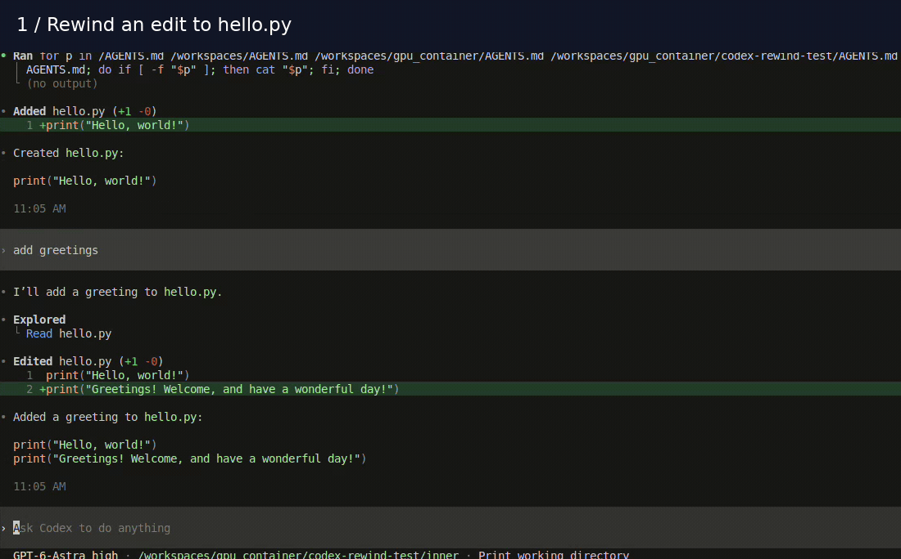
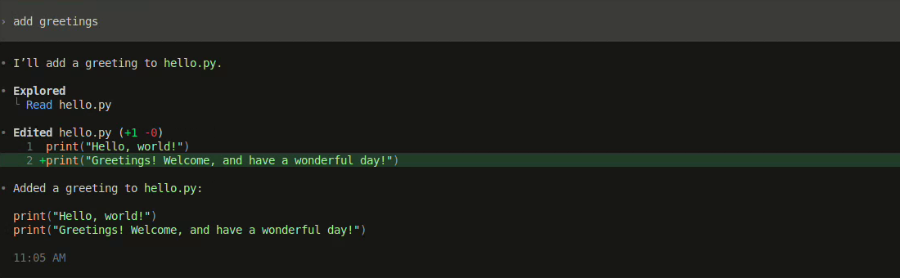
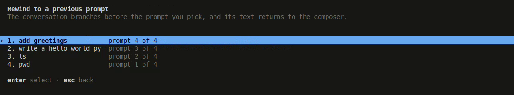
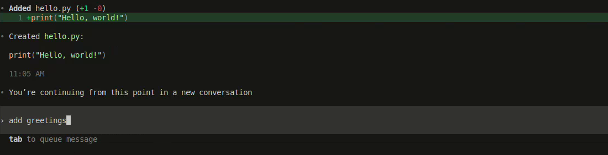
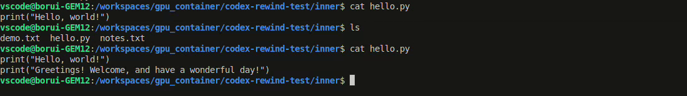

退一步。
换一种可能。
让对话和文件一起回退。
选一条之前的提示词，试试另一种思路。
编写 hello world 程序
添加问候语 已完成
1 print("Hello, world!")
2 print("Nice to meet you!")文件跟着对话一起回退
把已追踪的工作区文件恢复到所选提示词执行之前。
随时改变主意
用 /redo 恢复到回退之前的状态。
不改变你的 git 状态
不提交、不暂存、不写索引。在非 git 目录中也能使用。
OpenAI Codex CLI 的非官方发行版。与 OpenAI 无隶属关系，不受其背书或支持。
快速开始
安装发行版，启用快照，然后开始一个新会话。提供 macOS、Linux 和 Windows 的 x64 与 arm64 预编译程序。需要 Node.js 16 或更新版本。
1. 安装 Codex Rewind
npm install -g codex-rewind启动命令是 codexr。它与官方的 codex 并存，默认沿用你已有的登录状态和配置。
2. 启用快照并启动
codexr --enable file_snapshots3. 看一次实际回退
看看 /rewind 如何撤销新增的问候语，再用 /redo 恢复它。然后跟着下面的截图教程亲自试一次。
观看 rewind 与 redo 演示展开播放 · 收起隐藏动画

还没用过 Codex？官方指南介绍了登录方法和 CLI 的基本用法。
第一次回退
在练习目录中启用快照，开始一个新会话。点击任意截图可查看原图。
-
做两次修改
先输入
write a hello world py，等它完成后再输入add greetings。现在hello.py中有两条 print 语句。
回退前：问候语是 hello.py的第二行。 -
选择要撤销的提示词
输入
/rewind，用 ↑ / ↓ 选中 add greetings，然后按 Enter。最新的提示词排在最前面。按 Esc 可以退出选择器。
选中你想撤销其修改的提示词：add greetings。 -
检查文件
回退会恢复到所选提示词执行之前，撤销这一轮以及之后各轮的修改。打开
hello.py，现在只剩原来输出 hello world 的那一行。所选提示词会回到输入框，但不会自动发送。你可以修改它尝试另一种思路，也可以清空输入框。

回退后：文件只剩原来的 hello world，提示词等待你修改。 -
把修改恢复回来
清空输入框中的草稿，输入
/redo并按 Enter。对话和文件都会恢复到回退之前的状态。
用 cat hello.py验证：回退后只有一行，redo 后恢复为两行。


/redo 撤销。选择器会提前提醒。如果回退后又修改了文件或继续了对话，请仔细阅读 redo 的确认提示。
记住这三个命令
| 命令 | 作用 |
|---|---|
/rewind |
选择一条提示词，将对话和已追踪的文件恢复到它执行之前。 |
/redo |
撤销回退。如果文件在回退后有变化，请先阅读确认提示。 |
/status |
功能启用时，查看快照状态和磁盘占用。 |
追踪哪些文件
快照合并三个来源的文件。Shell 修改也能在这些范围内被捕获，但它并不是整台电脑的备份。
| 来源 | 范围 |
|---|---|
| Git 已追踪的文件 | 从索引读取，不限制文件数量。 |
| Agent 编辑的文件 | 由编辑工具捕获，包括工作目录之外的文件。不限制文件数量。 |
| 最近修改的文件 |
最多 100 个文件，每个不超过 16 MB。跳过 node_modules、target 和
Pods 等依赖与构建目录。
|
默认不追踪隐藏文件，但 agent 显式编辑过的文件除外。Rewind 不会修改 git 元数据。
排除不需要快照的文件
在项目中创建 .codexsnapignore，使用 gitignore 语法。它与
.gitignore 独立。被排除的路径不会被快照、恢复，也不会被恢复操作删除。
private-notes/
*.local.csv存储
快照位于 ~/.codex/file_snapshots/。相同的文件内容在不同轮次、不同会话之间只存一份。用
/status 查看占用。删除对话时会同时删除其快照；系统不会为了限制轮次数量而丢弃检查点。
融入你的工作流
要为之后的新会话启用快照，可以在 /experimental 中打开功能，也可以修改配置文件。如果已经有
[features] 段，直接在其中添加这一项。
[features]
file_snapshots = true隔离两个 Codex 发行版
默认情况下，两个发行版共用 ~/.codex，包括登录、配置和历史记录。如果希望隔离 Rewind，将
CODEX_HOME 指向其他目录即可。你需要在新目录中重新登录。
CODEX_HOME=~/.codex-rewind codexr --enable file_snapshots$env:CODEX_HOME = "$HOME\.codex-rewind"
codexr --enable file_snapshots限制与兼容性
codex
继续已追踪的会话，会静默产生快照缺口：那些轮次没有快照。在官方版中开始的会话也没有可恢复的文件快照。
- 仅支持本地环境。不支持远程环境。
- 不合并不同会话的修改。同一目录中的并发会话可能互相覆盖文件。请使用独立的 worktree 或 checkout。
- 恢复需要快照。Rewind 无法恢复到它还不知道文件存在时的内容。只有捕获记录能证明文件当时不存在，恢复操作才会删除它。
-
共用配置有兼容性限制。官方 Codex 会对未知的
file_snapshots功能键发出警告。使用--strict-config时，残留的未知字段可能导致报错。
Rewind 会归档被替代的对话。历史记录保持上游格式，归档的对话可以用
codex unarchive <id> 找回。
干净卸载
npm uninstall -g codex-rewind
要删除快照数据，只需删除 Codex 主目录中的 file_snapshots 目录，通常为
~/.codex/file_snapshots/。删除后将永久失去通过这些快照恢复文件的能力。
还可以从 config.toml 的 [features] 段中移除
file_snapshots，并移除整个 [file_snapshots] 配置段（如果存在）。
~/.codex 本身：它包含与官方 Codex
共用的登录、配置和对话。卸载不会自动取消 rewind 对历史对话的归档。
贡献与支持
请在本项目仓库报告问题，并附上下面两个版本号：npm 版本能定位 Rewind 发行版，codexr --version
则表示它基于哪个上游版本构建。
npm ls -g codex-rewind
codexr --version
提交贡献时请使用 git commit -s 添加签署信息。如果改动之后要提交给上游，原作者需要本人签署
OpenAI 的 CLA。